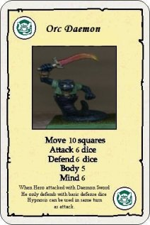

Orc Daemon
by Azrael

Download the Orc Daemon Monster Card (32K)
The Orc Daemon
This mythical creature is an Orc that has sold it's soul to chaos
He is revered by some orcs as a demi-god whilst loathed by others.
- The orc has a Daemon Sword which is a magical weapon,
when a creature is attacked by the daemon sword it can only roll basic
defense dice ignoring additional dice for armour and magic saves.
- If the daemon is destroyed then a hero may choose to pick up the weapon.
- The hero must take a mind test by rolling a D6 and adding his mind points.
- The sword has 3 mind points and also rolls a D6 if the hero scores
more than the sword then he can control it.
- Unfortunately it is tainted by chaos and when he uses it for the first
time he immediately comes under the control of Morcar/Zargon
- The Daemon sword cannot be used by the wizard
The orc is poisonous
- if a hero acquires any damage he must roll 1 combat dice per attack (not
per damage point)in addition to his normal defense
- If he rolls a black skull then he is poisoned and loses 1 body point per subsequent round
until he takes the anti-venom(try to make this available)
- The anti-venom only stops the poison's effects and does not restore body points
- The anti-venom can be made by using the daemons blood(must kill the daemon first)
and the water of healing spell
The orc also has the ability to hypnotise any heroes in his line of sight
- Any hero affected must roll a D6 and add this to his mind points
- the orc does the same
- if the hero scores higher then he is unaffected
- otherwise he is hypnotised and cannot attack or move and can only
defend with one combat dice
- Each subsequent turn he must roll a white shield on one combat dice
to recover from the hypnosis.
- Hypnosis can be used in the same turn as an attack and does not count
as an action.
The orc can only be harmed by magic weapons or spells
Orcs Bane does not allow for two attacks on this creature but does allow
for double the amount of attack dice to be rolled.
The model is a heroquest orc cut in half below the belt with a hot knife
the snake body is then made out of modelling putty(milliput) and copper wire
for further details mail me
The monster is for use in both versions of the game.